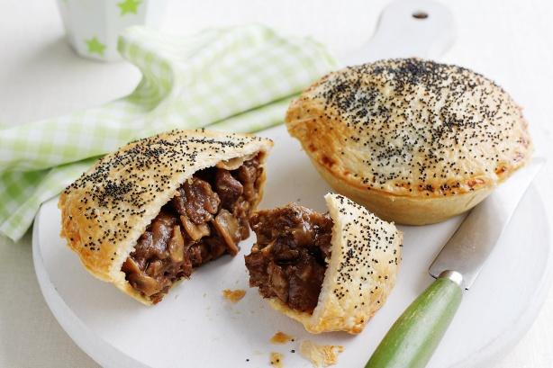

- 2 tablespoons olive oil
- 800g beef chuck steak, trimmed, cubed
- 1 medium brown onion, chopped
- 2 garlic cloves, crushed
- 1/4 cup plain flour
- 2 tablespoons instant gravy powder
- 2 tablespoons barbecue sauce
- 200g button mushrooms, thinly sliced
- 1 tablespoon chopped fresh rosemary leaves
- 2 sheets frozen reduced-fat shortcrust pastry, partially thawed
- 1 egg, lightly beaten
- 1 sheet frozen reduced-fat puff pastry, partially thawed
- 1 teaspoon poppyseeds
- Heat half the oil in a saucepan over high heat. Cook beef, in batches, for 3 to 4 minutes or until browned. Transfer to a bowl.
- Heat remaining oil in pan. Add onion and garlic. Cook, stirring, for 3 minutes or until softened. Return beef to pan. Add flour. Cook, stirring, for 1 minute. Add gravy powder, sauce and 2 cups cold water. Cover. Bring to the boil. Reduce heat to low. Simmer for 45 minutes.
- Add mushroom. Simmer, covered, for 30 minutes. Stir in rosemary. Simmer, uncovered, for 30 minutes or until beef is tender. Cool
Preheat oven to 190 °C/170 °C fan-forced. Grease four 7.5cm (base) pie tins. Cut shortcrust pastry sheets in half diagonally. Line prepared tins with pastry. Trim excess. Spoon filling into cases. Brush edges with egg. Cut puff pastry into 4 squares. Place over filling. Press edges to seal. Trim excess. Brush with egg. Top with poppyseeds. Bake for 30 to 35 minutes or until golden. Serve.